前言
本文为邓俊辉的《数据结构》的笔记与总结。
约定
- 空串是任何串的子串、前缀、后缀；
- 任何串是其自身的子串、前缀、后缀；
- 结合数学语言和编程语言来描述字符串的部分：
- 下标从 0 开始：
s[0]代表字符串 s 的首字符； - 括号中仅有一个索引时，为编程语言：
s[i]； - 括号中有两个索引时，为数学语言：
s[i, j)代表字符串 s 的 索引为 i 的字符到索引为 j 的字符之前的部分字符串（包括 i，不包括 j）
- 下标从 0 开始：
问题特点
由于字符串匹配问题中，成功和失败的概率相差太大，我们只好对成功、失败的匹配分别进行测试：
- 对于成功的匹配，在主串中随机取出长度为m的子串作为p，分析平均复杂度；
- 对于失败的匹配，采用随机的p，统计平均复杂度
以上是邓俊辉说的，我没看懂。
字符串匹配算法的效率与字母表的大小是有关的：字母表越大，串中各字符出现的可能也就越多，最坏情况出现的概率越高；
字符串匹配算法的效率与匹配串的长度是有关的：匹配串越长，最坏情况的后果更加严重。
蛮力算法（Brute Force）
版本1
这是最朴素的做法，相当于 T 不动，把 P 放到 T 旁边，逐个字符对比；若某字符对比失败，则挪动 P 一个字符：
1 |
|
当比对失败时，转向下一次比对的方法是：T 的指针回退，而 P 的指针复位。
假设 T 比对前开始的位置为 i，而因为 j 是从 0 开始的，所以 j 现在是多少，就意味着 j 移动了多少步，同时也意味着 T 的指针 i 移动了多少步，执行 i -= j 可以使 T 的指针回到该轮比对开始时的位置；但是参与下一次对比前，T 的指针要比上一次前进一位，所以 i -= j-1 才是合适的。
最终函数返回 i - j，可以让调用者知道匹配是否成功，而这其中的原理又是什么呢？可以从下面两个角度理解：
- 邓俊辉视角——匹配恰好失败时，正是 i 越过 T 时，且 j 还没有到达 P 的末端时：
- i 恰好过界，有
i == n； - j 还没过界，有
j < m； - j < m 的两边同时减去 i，可得
j - i < m - n，转换一下可得i - j > m - n。
- i 恰好过界，有
- 菜鸡（我）视角——T 与 P 匹配时，有两个极端情况：
- 一开始就匹配了，此时 i 与 j 值相同：j == i；
- 在最后才匹配，此时 i 就是 n（恰好越过 T 的末端），j 就是 m（恰好越过 P 的末端）；
- 可得 i - j 的值在 0 到 n - m 之间浮动，也就是
i - j >= 0 && i - j <= n - m； - 对于其他情况，则为 T 与 P 不匹配，对应
i - j < 0 || i - j > n - m； - 而 i - j < 0 是不可能发生的，所以 T 与 P 不匹配的情况可以用 i - j > n - m 来表示；
- 即：程序退出该
while( j < m && i < n)循环时，i - j > n - m表示匹配失败，反之匹配成功。
版本2
还是相当于 T 不动，把 P 放到 T 旁边，逐个字符对比；若某字符对比失败，则挪动 P 一个字符。不同的是，这里挪动的始终只有 j 指针：
1 |
|
在这里，i 指针不复位，因为 i 始终指向每一位置对比中 T 的对比位置的开端。该开端以 0 为始，以 n - m + 1 为终（不包括）。
在进入内层循环后，就是 T 的对比位置固定后，对 P 进行遍历，找匹配的字符。如果出现失配，也就是 T[i + j] != P[j] 的情况，自然是要终止循环，改变 i 的位置，然后进行新一轮的对比。
但是这里在内层循环终结后，还有一个 if 语句：if (m<=j) break;。当 m == j 时，很好理解：j 从 0 增长到 m，从没发生过失配，即完全匹配，的确可以结束循环，那么 m < j 应该对应什么情况呢？
m 是 P 串的长度，在 j 自 0 向 m 的增长中，j 怎么都不可能可以增长到比 m 还大的，所以，我更倾向于“m <= j 只是为了与内层循环中 j < m 的循环执行条件形成互斥”的解释。
最终函数返回 i，也就是 T 串对比的最终首位置。当 i 刚好跨过了外层循环的极限，也就是 i == n - m + 1 时，以 i 为开端的对比是怎么都不可能取得匹配结果的，因为 T 串剩余的可比较的长度不足了。所以，调用者可以根据 i 与 n - m + 1 的比较来判断匹配是否成功：若 i < n - m + 1，则匹配成功。
KMP
蛮力算法之所以低效，是因为：此前比对过的字符，又再次参与了比对。
在每一时刻，都是在比较 T 串中的第 i 个元素和 P 串中的第 j 个元素，但是在这之前，也就是 T[i-j, i) 和 P[0, j) 的对比结果我们是知道的，也就是这两者完全相等：T[i-j, i) == P[0, j)，这是我们可以利用的“经验”。那么该如何利用好这个经验呢？
我们可以利用这段已经匹配的部分字符串，求其最长公共前后缀，把 P 串首部与已匹配部分的末端相同的地方，移动到 j 前：
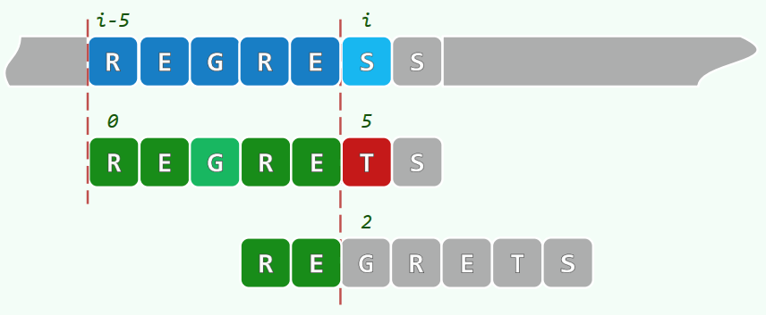
上图的示例中，就是把“RE”放到了 j 前。相对而言，实际上是把 j 往前挪动到最长前缀“RE”之后，也就是 j = 5 变成了 j = 2。假设已匹配部分的最长公共前后缀长度是 n，那么这里就相当于执行了 j = n;。
为什么是最长公共前后缀，而不是最短呢？极端情况下，公共前后缀始终有空字符串兜底，也就是说，在最坏情况下，仍有空串作为公共前后缀，如果取最短，那么每次 P 串的移动都会造成 P 串的首部再次对准 i，而错失其他匹配的机会。取最长的公共前后缀，可以保证移动后的 P 串与 T 串还保持部分匹配，同时移动量最少。
所以，对于每次 T[i] 与 P[j] 的比对，一旦失配，则可以迅速调整 P 串的位置，我们只要把 j 往前调整的量计算出来即可。而这个量，是可以提前算出的，而这个提前算出来的量，称之为 KMP 算法的查询表。
刚刚已经提到，在某字符的比对中失配时，j 往前移动的量，恰好就是 j 之前已匹配的字符串的最大公共前后缀长度，这说明我们只需要提前计算 P 串中每个位置之前的部分字符串，其最大公共前后缀长度是多少。而这，就是查询表中每个数字的含义：失配时，j 应该更新成的下一个值。由于查询表中第 k 个元素中（从 0 开始）存放的值意味着——当 j = k 时发生了失配，j 应该变成的值，所以我们在这里用 next 给查询表命名，于是，当 j 需要发生变化时，可直接调用：j = next[j];。同时，我们也应该注意到一点：next 的值可以提前计算得出，而且只与 P 串有关。
主算法
我们用 buildNext 来代表提前制造查询表的函数，在深入制表算法之前，先介绍 KMP 算法的主体：
1 | int match(char *P, char *T) |
KMP 算法是由 D.E.Knuth、J.H.Morris、V.R.Pratt 三人合作完成的，所以该算法名来源于这三个人的名字。
上面的代码是基于蛮力算法的版本 1 实现的。无论是在最外层负责检查 i 和 j 是否过界的 while 循环，还是最终返回匹配结果的 i - j，都与版本 1 的蛮力算法无异，不同的地方在于循环内部。很明显，其中的 if 和 else 语句分别对应“字符匹配”和“字符不匹配”两种情况。字符不匹配时，j = next[j];，这是我们之前讨论过的，该语句把 j 往前移，直至靠近 P 串首部的最长公共前后缀；而当字符匹配时，除了 T[i] == P[j]，还有 0 > j，这是怎么回事呢？难道 T[i] == P[j] 不足以覆盖这一条件吗？
事实上，是因为这里 if 语句中检查的 j 有可能是在上个循环中刚刚从 else 分支出来的，如果在这里不检查 j 是否小于 0 并接收小于 0 的 j 的话，则该负数 j 会传递到 else 分支；紧接着 j 作为负数，同时作为 next 数组的下标，在更新 j 本身之前，就会引起错误。可是，为什么 j 会变成负数呢？其实，next 表的第 0 项，恒为 -1，这就是 j 为负数的来源。当 0 > j 时，可看作是哨兵通配符，而通配符是与任何字符匹配的，所以 0 > j 的情况可以放在 if 语句的条件判断中。但是这番话还是没有说明为什么 j 会为负数，还有哨兵通配符又是什么？接下来的制表过程会揭晓一切。
制表
制表的过程，是寻找 P 串各位置的最大公共前后缀长度的过程。对于计算某个字符（比如下图中的“L”）前的最大公共前后缀长度，我们可以拿出一个一模一样的 P 串，放在其上方，往右移动上方的 P 串，使得字符“L”之前的某个前缀与“L”之前的某个后缀匹配：
而这个匹配的过程，又恰与 T 串与 P 串的匹配过程极其相似。到这里，我们可以发现，制表的过程，实质上是 P 串自匹配的过程！
这时，我们可以修改一下 next[j] 的含义，使其更契合 P 串的自匹配：next[j] 表示在 P[0, j) 中，最大自匹配的真前缀和真后缀的长度。
为什么要强调真前后缀呢？因为这是 P 串的自匹配，而字符串本身就是其自身的前缀或后缀，所以要去掉这种情况，就要描述成真前后缀（其实刚刚提到“最大公共前后缀长度”的时候就应该用“真”，只是我不够严谨）。
当然，P 串的自匹配跟 T 与 P 的匹配还是有本质区别的，因为 P 串肯定跟自己匹配啊，根本不存在失败的可能性。所谓自匹配，只不过是用类似的匹配方法来找出最大真前后缀长度罢了。
想要找出 P 串在某个位置 j 前的最大真前后缀长度，可把 P 串分割成 3 个部分：P[0, j)，P[j]，和 P(j, m)。现假设 next[j] 已知，要求 next[j+1]，要考虑 P[j] 和 P[next[j]] 的情况（也就是下图中的蓝色和绿色的 X）：
现有两种可能：
- 第一种可能——
P[j] == P[next[j]]：- 这意味着在蓝 X 之前的绿 X，居然也和蓝 X 相等！
- P[0, n(j)) 是因为与蓝 X 之前的后缀匹配才被移动到这里的，所以
P[0, n(j)) == P[0, j)； - 既然如此，加上蓝 X 后的 P[0, j] 自然与 P[0, n(j)] 是相等的，也就是说，又出现了一对前后缀匹配，而这对前后缀匹配，是可被 j+1 使用的；
- P[0, n(j)) 的长度为 next[j]，所以 P[0, n(j)] = next[j] + 1，而这是 P 串在位置 j+1 前的最大公共前后缀长度；
- 可得：
next[j+1] = next[j] + 1iffP[j] = P[next[j]]
- 第二种可能——
P[j] != P[next[j]]：- 相当于两字符串在位置 j 处失配；
- 此时应该将绿色的字符串往右移动，移动的步数应该为
next[j]； - 进入下一轮自匹配，再面临同样的两种可能，最坏情况下遇上字符串首元素左边的哨兵。哨兵其为通配符，与一切字符相匹配，如下图所示；
- 最终匹配之后，假设匹配的位置是 k，则说明，在位置 j + 1 之前，又出现了一对最长公共前后缀。
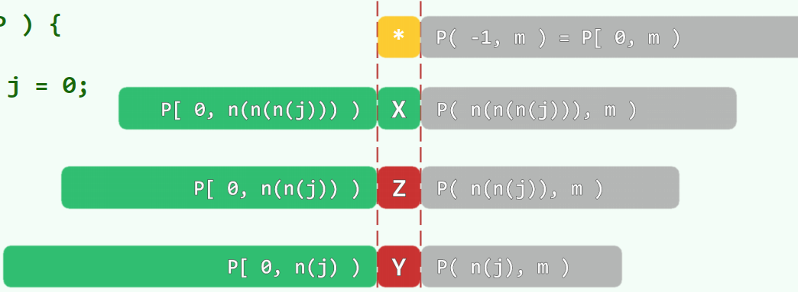
以上情况都是基于 next[j] 而推出 next[j+1] 的，也就是说，可以从 next 表的低位项推出高位项，那么 next 表中的首项应该是多少呢？
回到定义，next 的首项为 next[0]，这意味着，在 j = 0 时失配，j 应该往前挪动已匹配的最大公共真前后缀长度。但是失配的地方是 j == 0，也就是 P 串的开端，其前面除了空串，不可能存在最大公共真前后缀长度，此时应该要做的，就是 P 串放弃与该 T 串的第 i 个字符的比较，在逻辑上，可看作是与首部前面的通配符匹配，这有助于统一语义上的理解；但实际操作过程中可以把 next[0] 设为 -1，使用到 next[0] 时，可以直接用是否大于 0 来判断是否到达了哨兵，这就是下面代码中使用 0 > t 和上面代码中使用 0 > j 作为判断条件之一的原因：
1 | int *buildNext(char *P) |
由于是从 next[j] 推断出 next[j+1]，所以构建大小为 m 的数组，只需要将 j 循环至 m - 2，也就是 m - 1 前即可。
0 > t 和 P[j] == P[t] 都代表着自匹配过程中，当前匹配的字符相同，任何一个为真，都可以用当前的 next[j]（也就是 t）来更新 next[j+1]（也就是 N[++j]）；而对于失配的情况，只需要让指向移动的字符串的指针，也就是 t，移动到此前最大公共真前后缀长度的地方，寻找下一段与 P[0, j) 相匹配的前缀。
至此，初版 KMP 完成。
示例
以字符串 CHINCHILLA 为 P 串，制作其 next 表。
初始状态为如下，上方是作为主串的 P 串，其上方数字为 next 表；下方是作为匹配串的 P 串，其下方数字为下标；红线代表指针 j，蓝线代表指针 k：
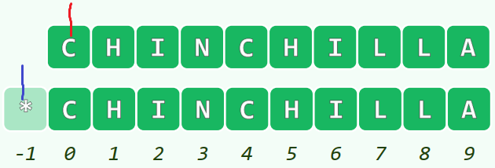
此时 j 为 0，k 为 next[j]，即 -1，这是计算所有 next 的其他项的基础。由于此时 k < 0，所以 j 和 k 均自增：
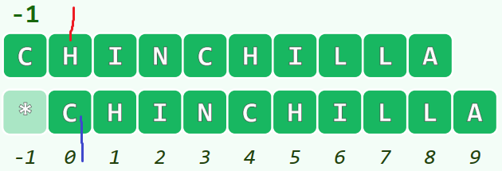
此时 j == 1，k == 0，其对应的字符分别为 H 和 C，不匹配。则需要将下方的 P 串往右移，移动的距离是字符 C 左侧部分的“最大公共前后缀长度”，也就是 next[k]，为 -1，则移动后的下一比较如下：
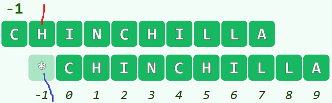
此时 k 指向了通配符，这与 j 指向的 H 是匹配的，所以 next[++j] = ++k。后面的几步都是一样的，我们直接跳到不一样的地方：
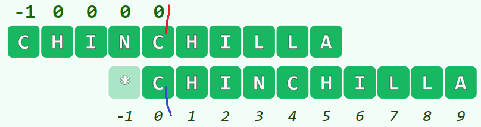
此时 j == 4，指向字符 C，而 k == 0，也指向字符 C，所以 next[++j] = ++k，其语义为 j == 5 时，j 前方的最大公共真前后缀长度为 ++k，也就是 1。接下来又进入到下一轮比较：
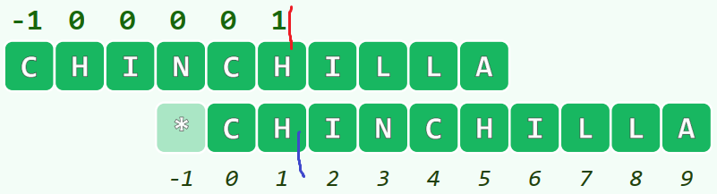
j 和 k 都指向了同样的字符，继续 next[++j] = ++k，其语义为：j == 5 时，也就是指向 I 时，j 的前方，也就是 P[0, j) 这个区间内，最大公共真前后缀长度为 ++k，也就是 2。接下来也是一样的：
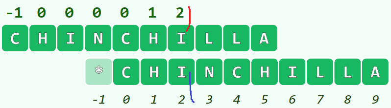
j 和 k 又指向了同样的字符，可得 next[++j] 的值，其语义为：j == 5 时，也就是指向 L 时，j 前方的最大公共真前后缀长度为 3。而接下来，就没有这么幸运了：
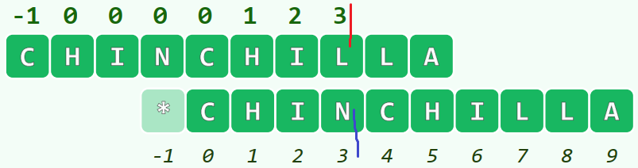
j 和 k 所指向的字符不一样，则 k 要往前移动，相对来说，就是下方的 P 串往右移动，首先移动到下个位置 next[k]，即 0：
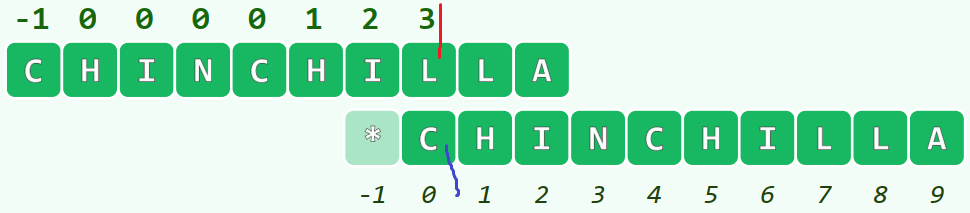
可见，j 和 k 指向的字符依然不等，则 k 还要继续移动，这次移动到下个位置 next[k]，也就是 next[0]，为 -1：
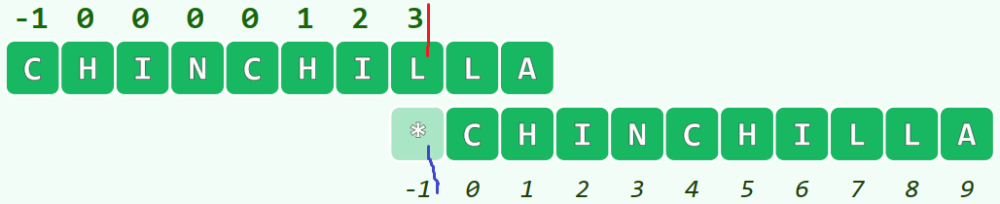
k 所指向的通配符与任何字符匹配，则 next[++j] = ++k，即 j == 8、指向第二个 L 时，其前方的最大公共真前后缀长度为 0。下一轮比较应为：
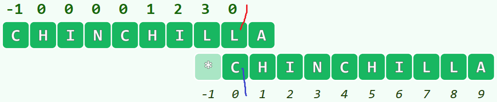
后面的制表过程就不再赘述。制表结果为：
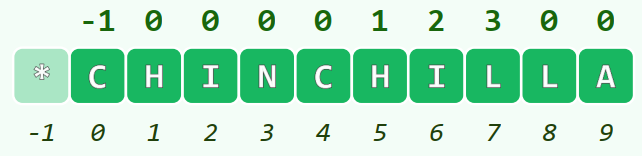
总结
该版本的 KMP 算法基于版本 1 的蛮力算法，设主串为 T，匹配串为 P，下面为蛮力算法：
1 | int bruteForce1(char *P, char *T) |
改进成 KMP 算法，要做以下几件事：
- 在循环之前要制 next 表；
- 指向匹配串 P 的指针 j 有可能为负数，需更改其类型为有符号数；
- i 和 j 都自增的前提条件中，添加匹配了通配符的情况；
- 两字符不匹配时，从 next 表中找到对应当前位置的跳转目的地；
- 在程序最后删除 next 表，因为其内存是动态分配的。
即可得：
1 | int KMP(char *P, char *T) |
其大意是——对于蛮力算法中的每次对比：
- 情况一：如果当前双方的对比字符相同，则双方指针自增（通配符匹配也包括在内）；
- 情况二：如果当前双方的对比字符不相同，则指向匹配串 P 的指针 j 往串的前面移动，距离为该位置前的最大公共真前后缀长度；
- 如果移动后新的对比字符相同，则可回到情况一，自增双方指针；
- 如果移动后新的对比字符还是不相同，则可回到情况二，继续单方面移动指针 j，最差情况下到达通配符的位置：
-1。
最终返回循环结束时 i 和 j 的相对位置，如果 i - j > n - m，说明匹配失败。
对于制表，其本质是对 P 串的自匹配，我们需要得到一个与 P 串同长度的整型数组 next[]，每个元素上的值，对应着 P 串在该位置失配时应该往前移动的距离。该距离在语义上是：P 串在该位置前的最大公共真前后缀长度。虽然是自匹配，但其实也可以看作是两个一样的字符串在匹配，可用指针 j 指向作为主串的 P，用指针 k 指向作为匹配串的 P。
对于已知的 next[j]，我们可以根据 P[j] 和 P[k] 的大小比较，判断出 next[j+1] 的大小，k 应初始化为 next[j]：
$$
\begin{aligned}
\text{next[ j + 1 ] = next[ j ] + 1}&\iff \text{P[ j ] == P[ k ]}\\
&\iff \text{P[ j ] == P[ next[ j ] ]}
\end{aligned}
$$
如果 P[j] 与 P[next[j]] 不相等，则需要 k 再往前找最大公共真前后缀长度，以便于得到 P[0, j] 这个区间的最大公共真前后缀长度，也就是 next[j+1]，所以 k 要往前移动：k = next[k]。
综上，可得代码：
1 | int *buildNext(char *P) |
KMP 算法在一般情况下是容易理解的，但是具化成代码之后，就变得不那么平易近人了，非常反直觉，尤其是制表的代码。
KMP：再改进
反例
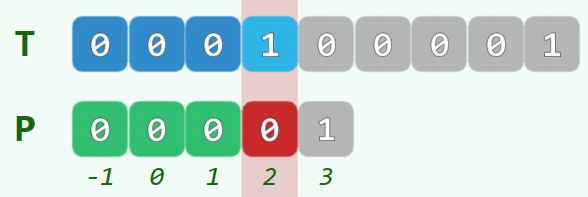
对于上图中这样的对比字符串，在指针 i 指向字符 1 时，指针 j 指向了 0，此时按照上面介绍到的 KMP 算法，应该把指针 j 往前移动，到达“最大公共真前后缀长度”处，在这里也就是 2，于是可以看到 P 串往右移动了一位：
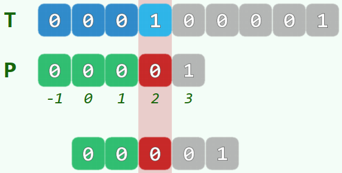
同样是指向新的字符 0，故技重施，会使得 P 串不停地缓慢往右移动：
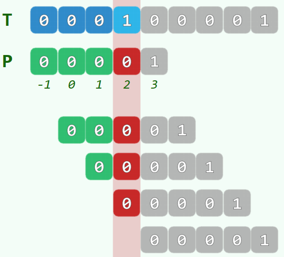
在这里，KMP 算法的问题在于：明知道对比失败时，新字符如果还是为 0 的话，是一定不可行的，但还是像鸡蛋碰石头一样撞了上去。如果说，直接在前面找 1 呢？KMP 算法的本质是借鉴了成功的经验，如果直接在前面找 1 的话，相当于把成功经验置之不理。
改进
所以，这里对 KMP 算法的改进应该着重于：新字符不能够为已经失配的字符。也就是说，要懂得“总结教训”。对此，我们只需要在原先的 KMP 算法中作出一些小改动。而且，我们要改动的是每次 j 的移动距离，所以只需要修改 next 表的构造过程。
需要注意的是，这样的修改，相当于修改了 next 表的语义，从“某位置前的最大公共真前后缀长度”，改成“某位置前不以 P[j] 为结尾后一个元素的最大公共真前后缀长度”：
1 | int *buildNext(char *P) |
这里对 buildNext 过程作出的修改出要是：
1 | if (0 > k || P[j] == P[k]) |
也就是说，在 buildNext 的自匹配阶段，即便找到了相同的真前后缀，但如果移动后当前对比字符仍是相等的，那还是要往前再取一次 next[k]。那为什么只再往前取一次，而不是一直取呢？因为我们已经修改了 next 的语义！
在 j 和 k 都自增过后，所指向的字符分别是下图中蓝色和绿色的 X 的后一位（红圈处）：
假设现在这两个被指向的字符是相同的，如果 next[j] = k，那么此时对于新语义，“最大公共真前后缀长度”是符合了，但是“不以 P[j] 为结尾后一个元素”不符合（此处的 P[j] 指的是 X 后一位字符）。在 next[j] 之前的元素都是符合新语义的，而 k 是小于等于 j 的，选取 next[k] 作为 next[j] 的值没有问题，其相当于在 P[k] 前面找到一个不以 P[j]（或 P[k]）为结尾后一个元素的最大公共真前后缀长度。（真乱，我差不多已经乱成一团麻了。）
BM
BM 算法由 Bob Boyer 和 J Strother Moore 合作完成。
从 KMP 和蛮力算法中反思
KMP 算法和蛮力算法都有一个特点，在逻辑上，是“主串不动，移动匹配串，从左向右比对”。
在每一次移动后的自左向右比对，都是局部的“多次成功，一次失败”；在匹配成功之前，每次移动都是以失败告终，这是总体上的“多次失败，一次成功”。KMP 相对于蛮力算法的贡献，看似是加速了匹配串的移动速度，而实质上是加速了总体上的“失败”过程，使之能尽早到达“成功”的位置。
要尽可能快速地排除掉无效的对齐位置，事实上 KMP 算法就是这样，KMP 可以做到排除大量无效位置，但是存在更快的排除方法：那些成功的比对并不重要，而在这个意义上，起实质作用的，反而是那些失败的比对，我们反倒应该更加期盼这种失败的比对出现得更早。
换句话说，我们无法避免吃到教训，但是我们要使之更早地出现，使更大的教训更早地出现。
我们可以观察下面的字符串比对，蓝色的是主串，灰绿色的是匹配串。
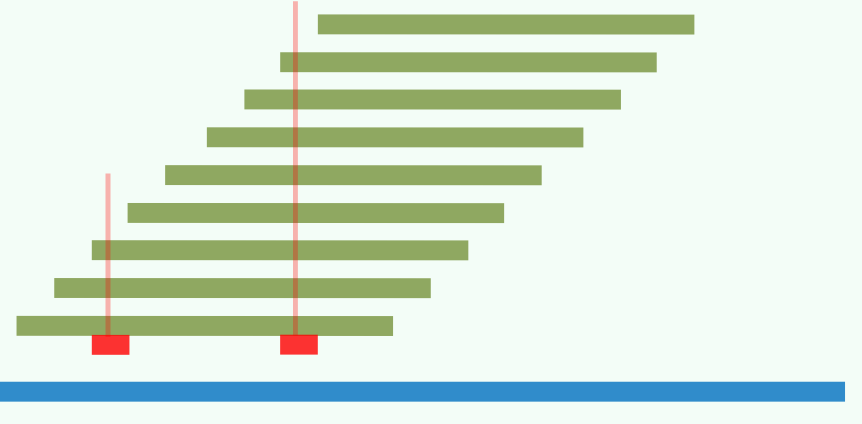
现假设已知匹配串中有两个字符是与主串相应位置上的字符失配的，其一字符位于匹配串靠首部的位置，另一字符位于匹配串靠尾部的位置。
如果利用已知经验，仅凭左边这个失配字符，匹配串最多可以往前挪到第三个位置；而仅凭右边这个失配字符，匹配串却最多可以往前挪到第八个位置。可见，在局部自左向右比对，和自右向左比对，是可以有不一样的效果的。
这就是 BM 算法与之前介绍过的算法的第一个不同之处：局部自右向左比对。以下是一个示例：
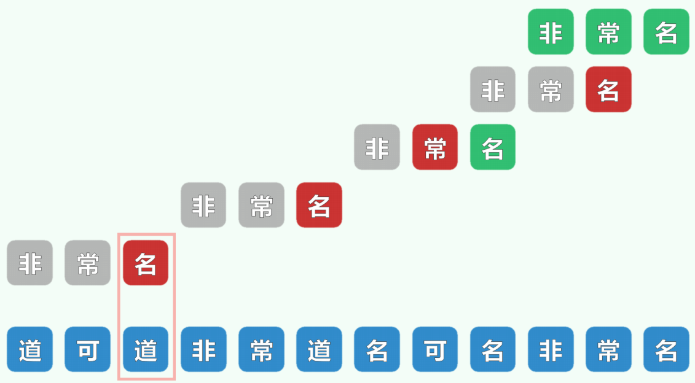
对于匹配串“非常名”的每一个位置，都从局部的后出发，向前比对。第一个遭遇的字符是“名”，其与主串中的道是不符的，此时我们要意识到，如果要实现匹配，匹配串中至少需要有字符“道”。显然此处匹配串不包含“道”，于是我们可以把整个“非常名”移动到字符“道”之后。
从上面的分析方法中可以看出，我们没有使用“最大公共真前后缀长度”这样的量作为移动步数的依据了。换言之，在 BM 算法中，我们不用 next 表，而用 gs 表和 bc 表。
bc 表和 gs 表
bc 表和 gs 表虽然含义与 next 表不一样，但是其同样是作为预处理的一部分，在真正的串匹配过程开始前就要构建好。
而提前构建是有条件的，并不是什么表都可以提前构建。next 表可以提前构建的原因是：next 表各位置的数只与 P 串相关，而与 T 串无关。
而这里的 bc 表和 gs 表，的确是只与 P 串有关。
BM-BC
bc 表
bc 是 Bad Character 的缩写，也就是坏字符。所以，bc 表是记录关于坏字符的表。那么坏字符又是什么呢？参照蛮力算法的版本 2，把 i 作为指向主串的指针，把 j 作为指向匹配串的指针，i 固定为当前匹配串相对于主串的位置，i + j 所指向的主串字符与 j 所指向的匹配串字符进行比对，我们来看这样一张图：
其中，绿色的标记为“matched suffix”的部分，是 BM 算法中自右向左逐个字符比对过程中的匹配成功后缀。此时在 i+j 和 j 上，两者指向的字符不同：X 和 Y。其中，Y 被称作坏字符（我不知道为什么不是 X 才是坏字符）。
在遇到坏字符后，我们可以知道，当前的总体匹配位置 i，是不合适的，应该排除掉；而下一个对齐的地方，应该是哪里呢？不求再次匹配该后缀，至少，应该把 X 匹配了吧？所以这里我们要找的下一个对齐的地方，是能够使 P 串中的 X 能够对齐主串的 X 的地方：
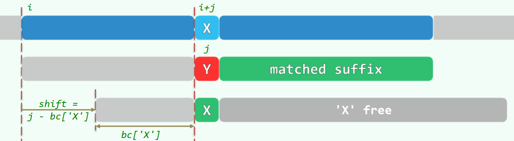
找到 X 在 P 串中的位置，把这个位置移到 Y 当前的位置。如果把 bc[‘X’] 作为字符 X 在匹配串 P 中的位置的话，那么对齐位置 i 移动的距离就应该是 shift = j - bc['X']，而 i 的变化应该为：i += shift;。
该移动距离是由当前 j 的值和 X 在 串P 中的位置决定的，与主串 T 相关的也就只有会出现什么样的字符，所以，bc 表还是可以提前构建的。
这里我们也可以得出 bc 表的语义了，那就是 bc 表中的某个元素代表着这个字符在 P 串中的位置；如果考虑 Y 是坏字符的话，那么该语义可以修改为：坏字符所对应的主串字符在 P 串中的位置。我们还需要考虑避免回溯的问题，那就是说，如果我们要根据 X 在 P 串中的位置进行移动的话，那么我们倾向于选择导致移动量最小的那一个位置。最终语义应为：坏字符所对应的主串字符，在 P 串中最靠右的位置。
在我们可以开始考虑其他的特殊情况了：
P 串中根本没有 X 字符
这就对应了“非常名”作为匹配串的这个例子，当主串中要匹配的字符为“道”时，而匹配串中根本没有字符“道”，所以整个匹配串直接跳过该字符。在代码实现上，为了实现操作的统一性，我们可以设置通配符作为哨兵，像之前那样，与通配符相比对，即意味着整个匹配串跳过该字符。
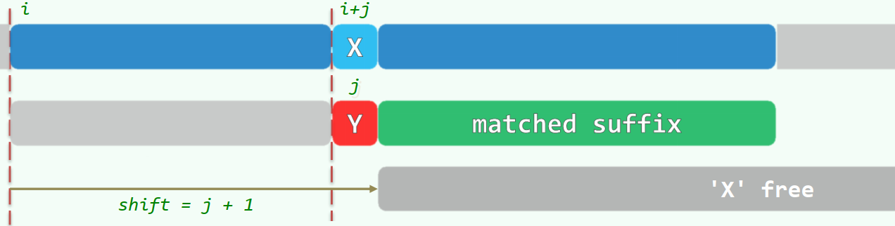
此时，i 需要移动的距离为 j + 1。
坏字符左边存在 X
此情况就是介绍 bc 表时所提及到的一般情况，i 的位移量为 shift = j - bc['X']。
坏字符右边存在 X
最靠右的 X 出现在了坏字符 Y 的右边，也就是说，j < bc[‘X’]，这会使得 shift 为负数；在视觉上，如果强行让该右边的 X 与主串中的 X 对齐的话，会导致匹配串的回溯！这是万万不可的，而且，该最靠右的 X 已经在之前的比对中被淘汰了，这是在 i 为当前值之前就已经决定了的。
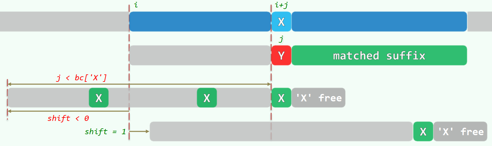
当最靠右的字符 X 出现在 Y 的右边时，我们只需要把整个匹配串往右移一位即可。也就是 shift = 1，如上图最后一行所示。
同时从图中我们也可以得知，匹配串中可以有多个 x，那么为什么当 bc[‘X’] 太靠右时，不选择次靠右的元素作为新的对齐标准呢？
这是因为 bc 表是一个一维数组，对于每个出现的字符，只能容纳一个信息，所以只存储最靠右的 X 位置，至于“次靠右”的元素，是无法选择的。再辅以“只往右移动一位”的保守操作，一维数组的 bc 表的确够用，且不需要回溯。当然，如果 bc 表是一个二维数组的话，那另当别论了，我们只需要选择最靠 j 左边的 X 即可：
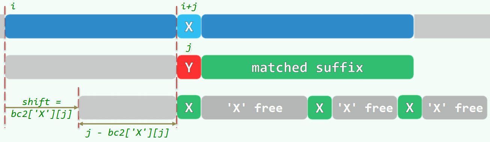
不过二维数组的 bc 表语义有些不一样，这里不展开讲了（我不会）。
构造 bc 表
由于 bc 表中反映的是主串中的某元素在 P 串中的位置，所以其大小至少为主串中的所有不同元素的个数。如果想要省略计算主串中不同元素个数的过程，那大可以把 bc 表的大小设置为字母表的大小：
1 | int * bc = new int [256]; // 假设用无符号的 char 类型存储字母 |
对于 bc 表中的每个元素，其初始值都为 -1，也就意味着，所有在主串中出现的元素，至少可以跟通配符匹配：
1 | for(size_t i = 0; i < 256; ++i) bc[i] = -1; |
接下来对每个出现在匹配串 P 中的元素，用画家算法记录其出现的最靠右的位置：
1 | for(size_t i = 0, m = strlen(P); i < m; ++i) bc[P[i]] = i; |
前面提到，bc 表还与主串中出现过的字符相关，但是如果 bc 表同时考虑那些不在串中的字符，那么 bc 表就彻底只与 P 串有关了，所以构建 bc 表的函数只需要一个参数：
1 | int *buildBC(char *P) |
性能分析
最好情况
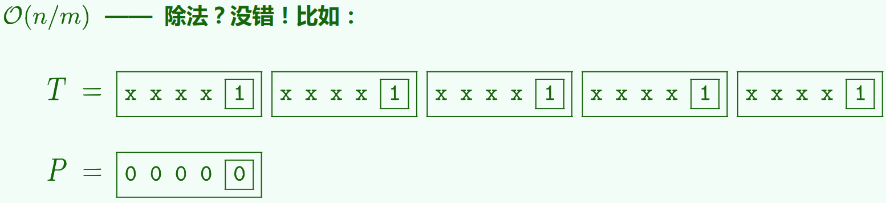
最坏情况
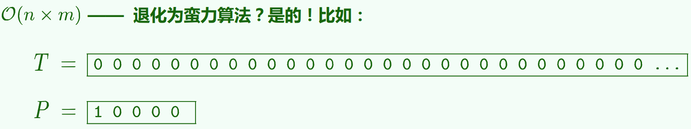
总结
当字符属于大字母表（ASCII、Unicode）时，单次匹配概率较小，性能优势明显；
当字符属于小字母表（Bitmap、DNA）时，单次匹配概率较大，性能接近蛮力算法。
以上坏字符策略吸取了教训，也就是仅仅利用了失配比对提供的信息，那能不能像 KMP 算法那样，把已知的好经验也借鉴一下呢？这就是 BM-GS 的策略。
BM-GS
gs 表
gs 是 Good Suffix 的缩写。我们从 bc 表的分析中可以看到，遇上坏字符的时候，有一段“matched suffix”是我们没有用上的。如果说 bc 策略中，新的对比位置要求至少需要对齐 X，那么 gs 策略中就要求：新的对比位置至少需要能匹配已经匹配过的后缀。如果失配过后调整的新位置连上次的匹配工作都没能做好的话，那这个新位置就直接可以放弃了。
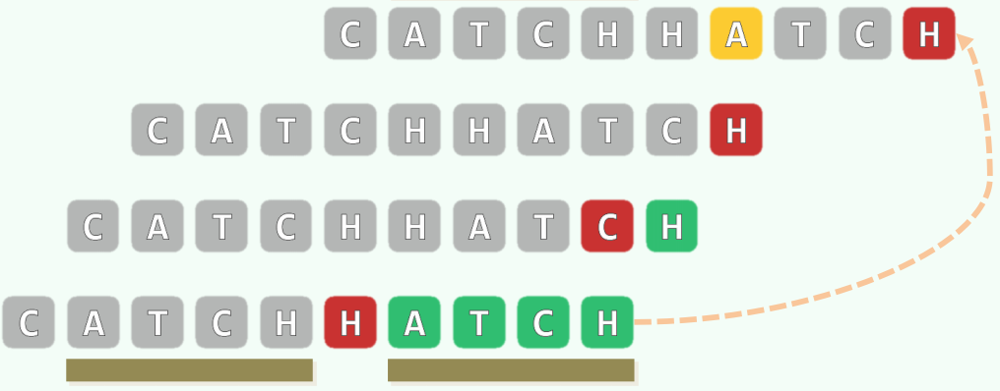
上图中，在指针指向字符 H 时发生失配，而在这之前已经匹配了 ATCH（最后一行），则下一个比对的位置，至少要有同样匹配的 ATCH（第一行）。这与 KMP 的思想是如出一辙的，只不过是前后颠倒而已。其用一般的图形表示，应为：
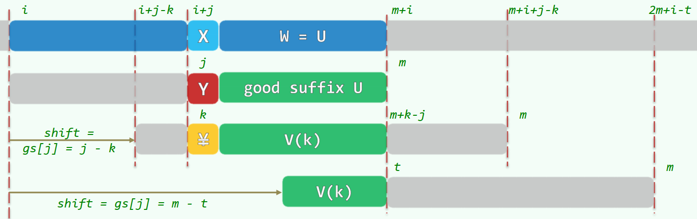
对上图的解释：
- 第一行：表示主串，现正以 i 为起点与模式串比对各字符，已对比的子字符串为 W=U，现于位置 i 与模式串失配；
- 第二行：表示模式串，其首部与主串的 i 位置对齐，与主串已完全匹配的好后缀（good suffix）为 U，现于位置 j 与主串失配；
- 第三行：表示模式串可以往右移动，使在 j 之前开始的子串 V(k) 再与 W 匹配，等价于与模式串的后缀匹配，且 P[k] 不等于 P[j]；
- 第四行：表示模式串可以往右移动，使 V(k) 可与 W 的（真）后缀相匹配，此处 V(k) 为 P 的所有前缀中找出的可与 U 的某一（真）后缀相匹配的最长者。
也就是说，当遭遇坏字符 Y 时，模式串中下一个与字符 X 对齐的位置 k，要满足以下两个特点：
- k 的后面依然可以与 W 的（真）后缀匹配，这是借鉴经验；
P[k] != P[j]，新的 P[k] 起码不能是原来的字符 Y，这是总结教训。
位移量仅取决于 j 和 P 本身——亦可预先计算，并制表待查。此处，gs 表的语义就是 i 的位移量，也就是模式串 P 向右移动的距离。
上图第三行和第四行囊括了在 T[i] 和 P[j] 失配时，模式串 P 的所有安全移动方案，其中 V(k) 作为前缀完全与好后缀匹配和 V(k) 为空的情况已经暗含在第四行中了。只不过是我不会画图，没有补充上去，而且应该只有我这种水平才需要这种特殊说明吧……
构造 gs 表
构造 gs 表之前，需要引入 MS 串和 ss 表的概念。
MS 串和 ss 表
MS[j] 表示：P[0, j] 的所有后缀中，与 P 的某一后缀匹配的最长者。MS 可看作 Maximum Suffix 的缩写。MS[j] 在图上可以这样表示：
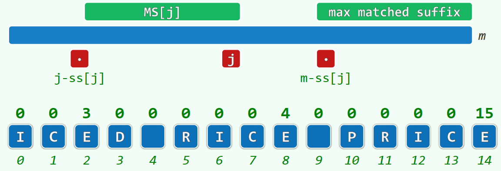
在上图中的示例 ICED RICE PRICE 中，对于下标为 8 的字符 E，以该字符为结尾的子串中，能最大限度与 P 串的后缀匹配的，只有下标 5 到 8 的 RICE。所以，MS[8] 应为 RICE，需要注意的是，MS[j] 是字符串，而不是数字。
对于 ss，可将其看作是 Suffix Size 的缩写，意味着某最大后缀的长度。上面 MS[8] 的例子中，MS[8] 对应的子串为 RICE，其长度为 4，所以 ss[8] 为 4。
所以，ss[j] 的语义是：以 P[j] 为结尾的所有子串，能与 P 串的后缀匹配的最大长度。
ss 表 -> gs 表
ss 表中，已经蕴含了构造 gs 表的所有信息。
为什么 ss 表中已经蕴含了 gs 表的所有信息？我是不知道，但是也只好进行下去了。
gs 表直接反映的是移动距离；而 ss 表直接反映的是某个位置如果作为子串的结尾，那么该子串最大能够匹配模式串的后缀的长度。
然而这还是与 gs 表直接反映的东西没有什么明显联系，我们可以转换一下思路——gs 表所反映的移动距离，同时反映着：模式串在位置 j 失配时，能找到的与好后缀最匹配的子串。而用 ss 表，我们可以轻易地获得各个位置之前最大的与模式串后缀匹配的长度。这时，ss 表与 gs 表应该可以或多或少地联系起来了。
好吧，越讲越乱了，我的水平还是不足以解释为什么 ss 表包含了 gs 表中所有的信息。也许读者看完后面的内容之后可意会吧。
总之现在如何构造 gs 表的问题，就转化成了如何构造 ss 表的问题。但是在解释如何构造 ss 表时，还是要先明白如何从 ss 表到 gs 表。
回忆 ss[j] 的语义：以 P[j] 为结尾的所有子串，能与 P 串的后缀匹配的最大长度。
则对于 ss[j]，其有两种情况：
第一种情况，ss[j] 足够大，大到为 j + 1，以至于 MS[j] 就是 P 串的一个前缀：
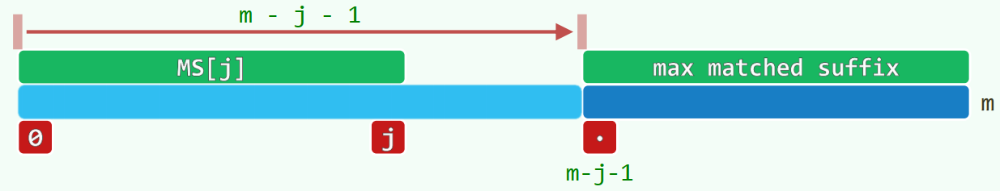
- 对于所有小于 m - j - 1 的位置 i，模式串在 P[i] 上失配时，都可以以 m - j - 1 作为模式串向右移动的距离，因为以这个距离移动后，MS[j] 可以与失配位置 i 之后的好后缀匹配（ i == m - j - 2 时为与好后缀完全匹配，其他时候为与好后缀的真后缀匹配）；
- 对于大于等于 m - j - 1 的位置 i，比如说 i == m - j - 1 时，如果移动 m - j - 1 个距离，那么 MS[j] 会覆盖 P[i] 本身，相当于模式串在某位置失配后移动，又再次因同样的字符失配，这是不被允许的。对于其他的大于 m - j - 1 的位置，也是如此；
- 失配位置 i < m - j - 1 时，m - j - 1 是可以考虑的移动距离，也就是 gs[i] 的候选值，而这个候选值是否为最终值，还要看其他 ss[j] 提供的移动距离是否比这个更安全（移动量更小）；
第二种情况，ss[j] 没那么大，ss[j] < j + 1，MS[j] 只是一个普普通通的子串：
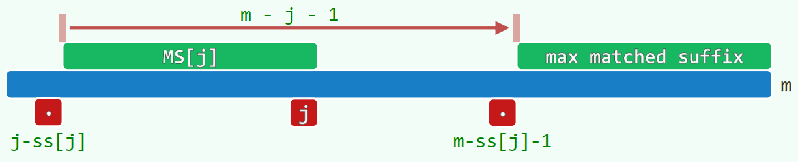
- 这里不能像第一种情况那样，可以提供大批量的位置 i 以候选移动距离。我们可以假设在 (j-ss[j], m - ss[j] - 1) 之间的某个 i 处失配，如果采用第二种情况下移动 m - j - 1 个距离的方案，那么 MS[j] 被移动到与 max matched suffix 重合后，我们并不能够知道，新的与 T 串上的字符 X 对比的字符是否为原先失配的那个。第一种情况中不需要这么考虑，是因为移动 m - j - i 个距离后，T 串中的 X 已经不在对比范围内了；
- 由于 MS[j] 有极大性，所以 P[j-ss[j]] 是一定不可能与 P[m-ss[j]-1] 相等的，否则，MS[j] 就应该包括 P[j-ss[j]]。因此，在 P[m-ss[j]-1] 失配时，把模式串往右移动 m - j - 1 个距离是可以考虑的方案，既满足了新位置与好后缀的匹配，又满足 T 串上的 X 与新的字符相比对；
- 失配位置 i == m - ss[j] - 1 时，m - j -1 是可以考虑的移动距离，也就是 gs[i] 的候选值，而这个候选值是否为最终值，要看其他 ss[j] 提供的移动距离是否比这个更字全（移动量更小）。
根据定义，每一位置 k 所对应的 gs[k] 只可能来自于以上两个候选。我们可以仿照构造 bc 表时的画家算法，取上述候选中的最小者（意味着移动量最小），可得最后的 gs 表。如果难以理解的话，可以结合代码理解：
1 | int *buildGS(char *P) |
第一个外循环：在初始化的时候，把所有 gs[j] 设成 m，意思是：如果找不到任何可以与好后缀的（或真）后缀相匹配的子串，那只能是整个串移走。对应的是下图中 V(k) 为空的情况：
第二个外循环：利用所有大小为 j + 1 的 ss[j]，对其可能覆盖的 i 进行赋值。也就是把所有的候选方案赋值给 gs[i]，其中 i < m - j - 1，所有移动距离为 m - j - 1。
之前我们有说到，对于每个 ss[j] == j + 1，其可以为所有小于 m - j - 1 的 i 提供候选值。这里有多个 ss[j]，其可服务的 i 的范围应该是有所重合的，那上面介绍到的算法是如何避免更不安全的值被赋予 gs[i] 的呢？
在正式介绍之前，可以把该循环的判断条件语句从
j < UINT_MAX改成j >= 0，前者只是利用了无符号数下溢出的特性，反正我第一眼没看懂，经过无数次自我怀疑之后才发觉这很骚，骚到我甚至不觉得这是什么好东西。一般的思维下，利用 ss[j] == j + 1 给 gs[i] 赋值，可以这样做：
1
2
3
4for(int j = 0 ; j < m; ++ j)
if(ss[j] == j + 1)
for(int i = 0 ; i < m - j - 1; ++i)
gs[i] = m - j - 1;这是个很正常的二重循环。
在最坏情况下，每个 j 控制的循环内都符合 ss[j] == j + 1，我们看看各次循环的赋值：
- j == 0, i in range(0, m - 1)：赋值 m - 1 次，j 最小，则 gs[i] 最大；
- j == 1, i in range(0, m - 2)：赋值 m - 2 次，j 很小，则 gs[i] 很大；
- …
- j == m - 2, i in range(0, 1)：赋值 1 次，j 最大，则 gs[i] 最小；
可见，在上面的赋值模式下，在前面赋值到 gs[i] 的，往往是更大的 m - j - 1；而越往后，gs[i] 变得越小，也就是移动的距离变得越小，也就越安全，这是符合定义的。
但是，
gs[i] = m - j - 1;这条语句，一共执行了 1 + 2 + 3 + 4 + … + m - 2 + m - 1 次，也就是 $O(m^2)$，效率还有待提高，我们可以看看示例代码是怎么做到 $O(m)$ 的：1
2
3
4for (int i = 0, j = m - 1; j >= 0; --j)
if (j + 1 == ss[j])
while (i < m - j - 1)
gs[i++] = m - j - 1;这也是个二重循环，但其实最内部的语句，总共只可能执行 $O(m)$ 次，因为 i 在内部语句自增后在下一轮循环中没有恢复为 0（需自行体会）。
这样做时间是节省了，但是正确性有保证吗？有的！代入数值计算一下，我们就会发现，i 是在 j 的减小下单调递增的，到 j 达到退出循环条件时，i 恰好自增到可覆盖所有可覆盖的元素。较前面 gs[i]，获得的距离是由较大的 j 运算得来的较小的 m - j - 1，所以，这里给每个 gs[i] 赋的值都是恰到好处的。没有像一般思维下那样浪费重复赋值的时间，所以该代码算不上是画家算法，而是经过精心设计的最优分配方法。
第三个外循环：利用所有 ss[j] < j + 1，对其可能覆盖的 i 进行赋值。也就是把所有的候选方案赋值给 gs[i]，其中 i == m - ss[j] - 1，所有移动距离为 m - j - 1。
代码如下：
1
2for (size_t j = 0; j < m - 1; ++j) // 找到与好后缀完全匹配的子串
gs[m - ss[j] - 1] = m - j - 1;由于 j 是递增的，所以 m - j - i 是递减的，最后覆盖在其他值之上的值一定是较小的。这是其画家算法的一部分；
另一部分体现了画家算法的本质是：其可能覆盖了第二个外循环赋过的值。这样做之所以是合理的，是因为：对于某个字符 P[i]，如果我们都能找到符合要求的子串或前缀，那么优先选子串，因为对齐子串所需要往右移动的距离更小，这样更安全。这个从上图的比对中也可以看出，如果 V(k) 是模式串的前缀的话，位移量不会比 V(k) 为普通子串时小。所以，代码中先处理 ss[j] == j + 1 的情况，然后再处理 ss[j] < j + 1 的情况，因为后者结果对前者的覆盖是合理的。
构造 ss 表
ss 表的构造是从模式串的尾端开始，到首端结束的，也就是自后向前地逆向扫描。其中需要用到以 lo 和 hi 来界定的极大匹配后缀。这个极大匹配后缀的定义比较模糊，我相信在后面应该可以将其总结得更清晰。
我们设定：某个位置 j 是在 lo 和 hi 之间的，而 P(lo, hi] 的字符与该模式串的后缀是匹配的。这时，我们可以得知，有某个处于模式串后缀的位置上的字符，与 P[j] 是一样的，而这个位置可以用 m - (hi - j) - 1 来表示，也就是下图中灰色点的左侧一个元素：
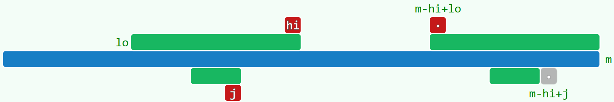
由于我们是自右向左扫描，所以 ss[m-hi+j-1] 的值应该是已经计算出来了的，我们可以利用该值帮助快速计算 ss[j]。
情况一：
ss[m-hi+j-1] <= j - lo- 这意味着
MS[m-hi+j-1]都还没有突破P[m-hi+lo]； P[lo]与P[m-hi+lo]一定不同，否则 lo 可以更小，即MS[j]无法突破P[lo+1]；P[lo, j]与P[m-hi+lo, m-hi+j-1]的字符完全匹配，MS[j]应该与MS[m-hi+j]一致；- 所以此时：
ss[j] = ss[m-hi+j-1]
- 这意味着
情况二：
ss[m-hi+j-1] > j - lo这意味着
MS[m-hi+j-1]还可以向左延伸，也就是说，ss[j] 至少为 j - lo，如下图所示：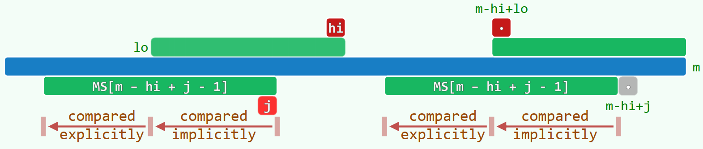
此时，根据 P(lo, hi] 的定义，可得 P(lo, j] 与 P[m-hi+lo, m-hi+j) 匹配（下图中红框所示）；根据 MS[m-hi+j-1] 的定义，可得 P(lo, j] 与 P(m-j+lo-1, m-1] 匹配（下图中蓝框所示）：
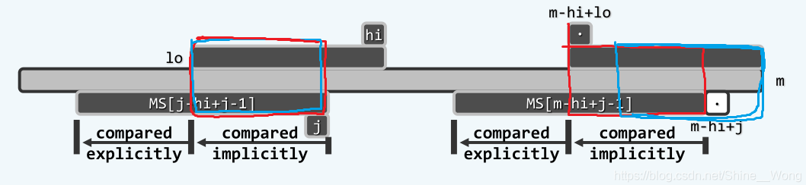
既然 MS[j-hi+j-1] 是可以突破 P[lo+1] 的，那么就应该开始检测 P[lo] 是否与 P[m-hi+lo-1] 相等，并以此类推，直到 MS[j-hi+j-1] 无法延伸为止。
但是即便如此，我还是不太明白为什么 hi 要更新。从参考的博客中有这么一句：
lo和hi的更新是为了保证对接下来要进行确定的字符，形成尽可能大的覆盖，而并非只是单纯地维护匹配后缀的最大值，以保证后面要遍历到的位置，尽可能地处于lo和hi的包围中，从而可以应用这里的两种情形。根据博客的这句解释，我大概可以理解为：如果 hi 保持不动，且这时
P[lo+1]跟P[m-(j-lo)-1]是相同的，也就是下图中绿色的部分：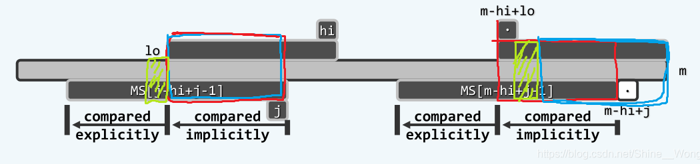
这样一来，
P[lo, hi]还能与模式串的后缀匹配吗？答案是否定的，因为按照定义，此时的P[lo, hi]应该与P[m-(hi-lo)-1, m)匹配，但由于P[lo]对比的是P[m-1(j-lo)]，而不是P[m-(hi-lo)-1]，违背了定义。因此，hi 必须修改为 j，在蓝圈的基础上
P(lo, hi]已与P[m-(hi-lo), m)匹配，去掉上图中的红圈，后加上绿圈，就是P[lo, hi]与后缀P[m-(hi-lo)-1, m)完全匹配，符合定义。
ss 表的构造代码如下：
1 | int *buildSS(char *P) |
其中情况二中有个 while 循环，看似整个流程用了 $O(m^2)$ 时间，但其实并没有。该循环执行的语句只与 lo 的自减相关，而纵观整个程序的生命周期，lo 的自减是单调的，有时候 hi 修改为 j，降得过了头，lo 甚至还需要减多几步。所以该 while 循环执行的总次数无法超过 $O(m)$。
主算法
Todo.
参考
CSDN 博客（如果没有这篇博客我是寸步难行）：https://blog.csdn.net/Shine__Wong/article/details/102056037
后记
跟 BM-GS 比起来，KMP 算法真是太简单了。BM-GS 的理解花了我整整两天的时间，无数次放弃又拾起，都没能够把我真正带入到完全理解该算法的境界。这种算法面试的时候如果考了，那我还是不做人了，JOJO！